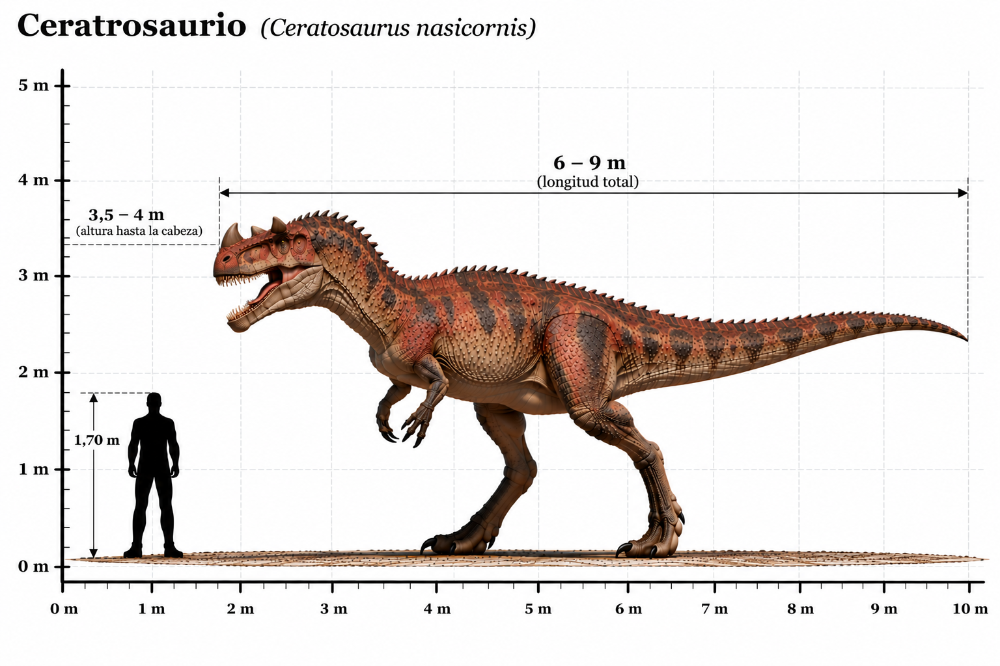

Ceratosaurus nasicornis

El Ceratosaurus nasicornis fue un dinosaurio terópodo carnívoro que habitó América del Norte durante el Jurásico tardío, hace aproximadamente entre 153 y 148 millones de años. Su característica más distintiva era un cuerno situado sobre el hocico, acompañado de dos pequeñas protuberancias óseas sobre los ojos. Poseía un cráneo alargado con dientes afilados, unas poderosas patas traseras y brazos relativamente cortos con cuatro dedos. A diferencia de otros grandes terópodos de su época, como Allosaurus, el Ceratosaurus presentaba una hilera de pequeñas placas óseas a lo largo de la línea central de su espalda. Compartió su ecosistema con grandes saurópodos, estegosaurios y otros depredadores. Se cree que pudo alimentarse tanto de dinosaurios terrestres como de otras presas, aunque sus hábitos de caza exactos siguen siendo objeto de investigación.
- Grupo: Terópodo.
- Familia: Ceratosauridae (ceratosáuridos).
- Período: Jurásico tardío (hace aproximadamente 153–148 millones de años).
- Alimentación: Carnívoro.
- Longitud: Aproximadamente 5–7 metros.
- Altura: Aproximadamente 2–2,5 metros hasta la cadera.
- Localización: América del Norte (actual Estados Unidos).
